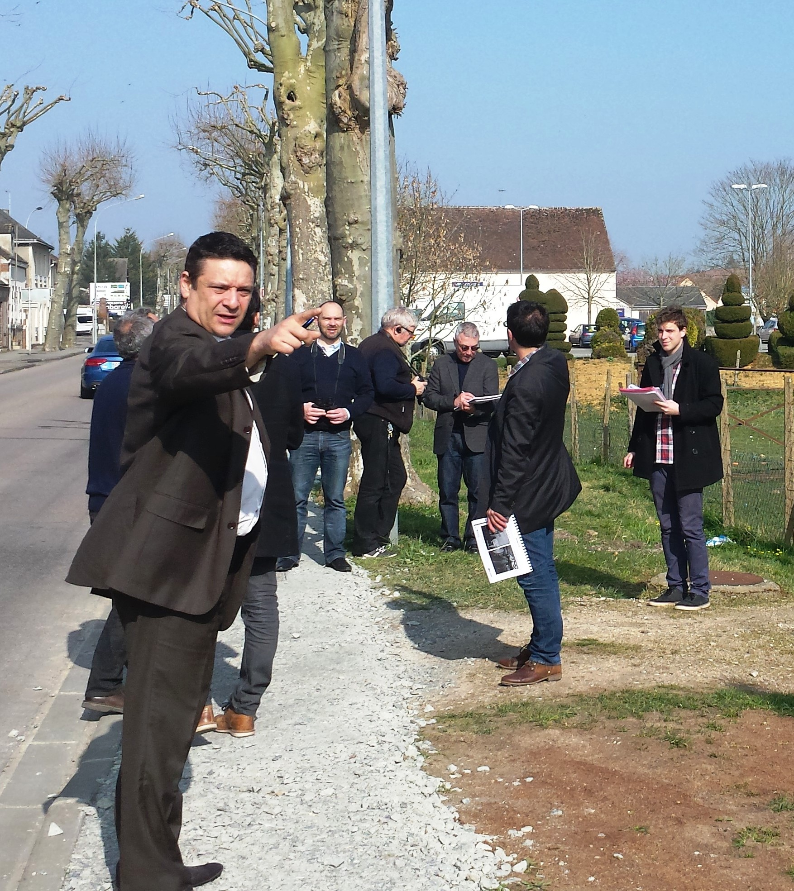
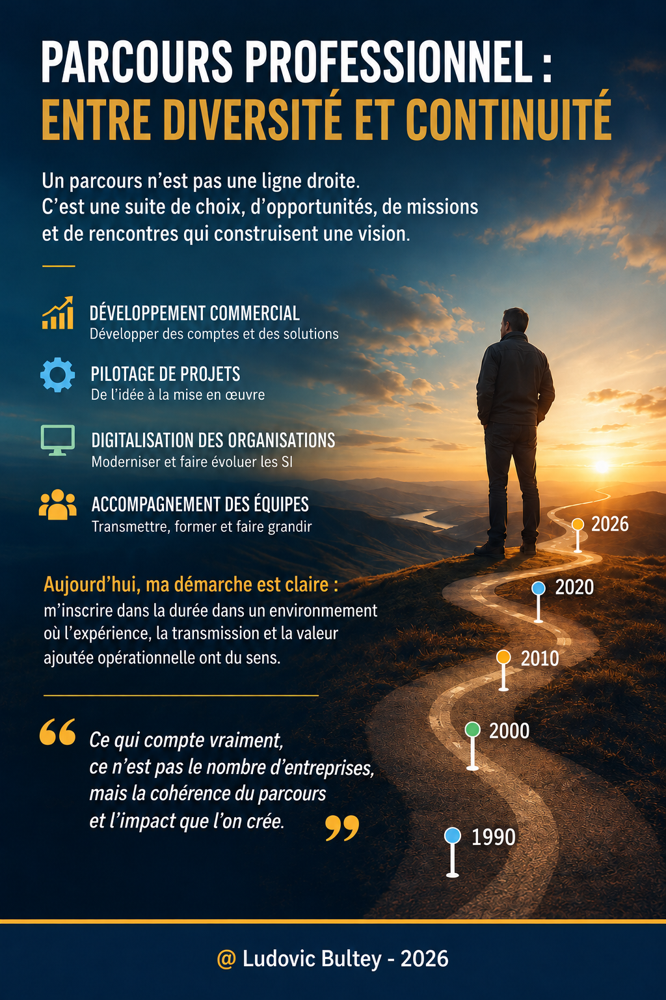

30+ ans
Expérience IT
Une connaissance de terrain des systèmes d'information, des applications Legacy et de leurs évolutions.
Sales / Account Manager avec plus de 30 ans d'expérience à la croisée de la technologie, du business et de la transmission. Issu des systèmes IBM et du développement Legacy, j'accompagne aujourd'hui les enjeux de relation client, de développement commercial et de modernisation des systèmes d'information.
Ludovic BULTEY
Mon parcours a accompagné plusieurs générations technologiques : IBM AS/400, architectures Client/Serveur, Web, Cloud, Data et aujourd'hui Intelligence Artificielle. J'ai progressivement évolué du développement vers le Business Development IT, l'Account Management, la gestion de projet et le Product Management.
Une connaissance de terrain des systèmes d'information, des applications Legacy et de leurs évolutions.
Comprendre les environnements techniques tout en intégrant les besoins clients, les usages et la valeur économique.
Sales, comptes stratégiques, développement commercial, négociation et accompagnement du changement.
« Moderniser ne signifie pas nécessairement tout réécrire. »
Gestion et développement de comptes, fidélisation, analyse des besoins, propositions commerciales, négociation, développement de la valeur client.
IBM i / AS400, Mainframe, OS/400, RPG, COBOL, CL, DB2/400, SYNON et BPCS.
Analyse de l'existant, continuité applicative, architectures, intégration, accompagnement du changement et transformation digitale.
Product Management, stratégie produit, roadmap, KPI, Agile, Scrum, Lean, PERT et Waterfall.
Python, SQL, Power BI, IA générative et agentique, documentation et compréhension assistées du code Legacy.
Veille autour de l'IAM, EDR, SIEM, résilience SI, NIS2, Cyber Resilience Act et AI Act.
Accompagnement d'un portefeuille de clients professionnels et de comptes nationaux et internationaux utilisant WINDEV, WEBDEV et WINDEV Mobile, notamment dans des environnements SI intégrant des écosystèmes IBM AS/400 – IBM i.
Gestion et développement de comptes, solutions logicielles, modernisation applicative et transformation des usages.
Sciences de gestion, informatique, gestion-finance, digitalisation et accompagnement pédagogique. Une expérience renforçant ma capacité à expliquer, transmettre et accompagner le changement.
Inside Sales, ingénieur commercial, Key Account Manager, responsable d’agence et Business Manager dans des sociétés informatiques, des éditeurs de logiciels et des ESN.
Développement, migration et exploitation sur IBM AS/400. GAP II/III, SYNON, BPCS, interfaces BULL/IBM, OS/400, Mainframe et StorageTek.

Mon parcours dans le management, le développement commercial, la gestion de comptes et l'enseignement m'a conduit à intervenir dans des contextes où il faut donner une direction, communiquer clairement et mobiliser des interlocuteurs différents.
J'associe le leadership à une approche concrète : comprendre la situation, partager les objectifs, faciliter la décision et accompagner les équipes et les clients dans la mise en œuvre du changement.

Le sport m’a appris très tôt des valeurs qui m’accompagnent encore dans mon parcours professionnel : engagement, persévérance, discipline, solidarité et goût du challenge.
L’esprit de compétition, c’est vouloir progresser, se dépasser et viser le résultat sans oublier le collectif. Dans le sport comme dans l’entreprise, la performance individuelle prend tout son sens lorsqu’elle contribue à la réussite de l’équipe.

Un système Legacy n’est pas nécessairement un système obsolète. Mon expérience des environnements IBM AS/400 nourrit une approche pragmatique : comprendre le patrimoine applicatif, préserver sa valeur métier et l’ouvrir progressivement aux usages modernes.
Un patrimoine applicatif représente des années de règles métier, de données, d'interfaces et de savoir-faire. Avant de remplacer, il faut déterminer ce qui mérite d'être conservé, sécurisé, modernisé, interfacé ou réécrit.
COMPRENDRE → CARTOGRAPHIER → ÉVALUER → SÉCURISER → MODERNISER → INTÉGRER DATA & IA

Mon approche associe PERT, Lean, Agile et Product Management : optimiser le chemin critique, éliminer le superflu, travailler par itérations et maintenir l’alignement entre vision, besoins utilisateurs et exécution.
.png)
Transmettre les savoirs ne consiste pas seulement à enseigner l’existant : c’est aussi donner les moyens d’imaginer et de construire la suite. Mon expérience de l’enseignement et de la formation complète ainsi mon parcours IT et Business.

Au-delà de l’usage des outils, je m’intéresse à leur appropriation par les utilisateurs : vulgariser les concepts, partager des pratiques concrètes et transformer une technologie en usages opérationnels.
Ces dépôts constituent la feuille de route du portfolio. Ils peuvent accueillir progressivement des démonstrateurs, articles techniques, architectures, notebooks et études.
Modernisation IBM i / AS400 : RPG, COBOL, DB2, API, DevOps, VS Code et IA.
Patterns et réflexions autour de la transformation progressive des patrimoines applicatifs.
IA pour la compréhension du code, la documentation, l'analyse des dépendances et des impacts.
Expérimentations Python, SQL, Power BI, analyse de données et Intelligence Artificielle.
TCO, ROI, Build vs Buy, coûts de migration, dette technique et modèles économiques logiciels.
Veille et analyses sur la cybersécurité et la résilience des systèmes d'information.
Management en stratégie et développement de projets digitaux : stratégie produit, besoins utilisateurs, Agile, roadmap, KPI et transformation digitale.
Architecture Client/Serveur et systèmes d'information : architecture applicative, développement, bases de données et intégration au SI.
Commerce, gestion, marketing, négociation, stratégie et management appliqués au secteur informatique.
RPG, GAP III, DB2, OS/400, analyse fonctionnelle et technique, programmation, tests et maintenance.
2026 — Enseigner le Numérique et les Sciences Informatiques : algorithmique, programmation, données, architectures, réseaux et systèmes.
OpenClassrooms — 2023 — Culture Agile, Scrum, travail itératif, priorisation, collaboration et amélioration continue.
OpenClassrooms — 2023 — Recherche, qualification des sources, analyse et veille technologique, économique, réglementaire et concurrentielle.
CNAM — 2023 — Validation des acquis professionnels et personnels au niveau Master 1 Comptabilité, Contrôle, Audit.
Ministère de l'Enseignement supérieur — 2021 — Conception pédagogique, objectifs d'apprentissage, évaluation et usages du numérique.
Université Toulouse – Jean Jaurès — 2021 — Perception, attention, mémoire, apprentissage, raisonnement et prise de décision.
Panthéon-Assas — 2021 — Formation juridique et fondamentaux du droit.
CNFPT — 2020 — Acquisition des connaissances fondamentales de la commande publique : cadre juridique, principes de transparence et d’égalité de traitement, procédures de passation, appels d’offres, analyse des candidatures et des offres, attribution des marchés et suivi de leur exécution. Sensibilisation aux obligations réglementaires et aux relations entre acheteurs publics et entreprises.
COMPTALIA — 2020 — Sources du droit, contrats, responsabilité civile et environnement juridique des entreprises.
COMPTALIA — 2020 — Opérations courantes, TVA, trésorerie, immobilisations, inventaire, contrôle des comptes et clôture.
IBM i / AS400 • Legacy • Business Development IT • Account Management • Product Management • Data & IA • Cybersécurité • Transformation digitale
« La phrase la plus dangereuse est : “Nous avons toujours fait comme ça.” » — Grace Hopper
Des systèmes de gestion historiques aux usages de l’IA, les grandes ruptures technologiques ont transformé les architectures, les métiers et les modèles économiques. Mon parcours s’inscrit dans cette continuité : comprendre l’existant, accompagner les transitions et créer de la valeur.
Applications de gestion, RPG, COBOL, ERP, systèmes centralisés et continuité opérationnelle.
Architectures distribuées, bases de données, interfaces métiers et intégration applicative.
Applications web et mobiles, nouveaux usages, digitalisation des processus et expérience utilisateur.
Services cloud, API, automatisation, agilité et modernisation progressive des SI.
Valorisation des données, IA générative, nouveaux usages et accompagnement du changement.
Agents intelligents, cybersécurité, gouvernance et intégration maîtrisée au patrimoine applicatif.
Fil conducteur : moderniser ne signifie pas nécessairement tout réécrire. La rupture technologique se pilote en préservant la valeur des systèmes existants.
Un parcours n’est pas une ligne droite : il se construit par les choix, les opportunités, les missions et les rencontres. Le fil conducteur reste la création de valeur, le pilotage de projets, la transformation digitale et l’accompagnement des équipes et des clients.
